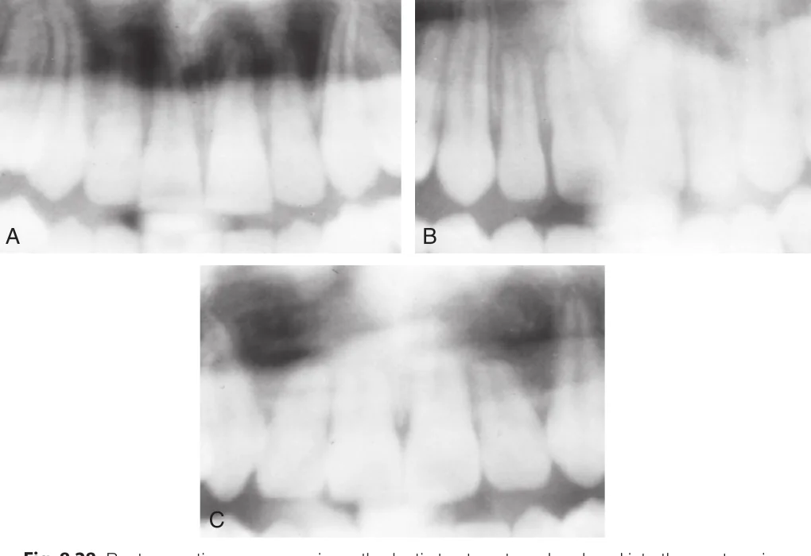

نسخه استخراجشده؛ ترجمه یا تأیید علمی انجام نشده است. وضعیت: captured
درجاتی از تحلیل ریشه در اکثر بیماران ارتودنسی رخ میدهد — معمولاً کمتر از ۲ میلیمتر و بدون اهمیت بالینی.
اما در گروه کوچکی، تحلیل شدید — مثلاً بیش از ۴ میلیمتر یا بیش از یکچهارم طول ریشه — دیده میشود که پیامد واقعی دارد.
⚠️ تحلیل ریشه برگشتناپذیر است؛ سمنتوم ترمیم میشود اما طول از دست رفتهی ریشه بازنمیگردد.
نکتهای که در گفتوگو با بیمار مهم است: تحلیل خفیف عملاً بر بقای دندان اثری ندارد. دندانی که یک تا دو میلیمتر از ریشهاش کوتاه شده، همچنان پشتیبانی پریودنتال کافی دارد.
آنچه اهمیت دارد، شناسایی همان گروه کوچک پرخطر است — که موضوع اسلاید بعد است.

| دسته | عامل |
|---|---|
| بیمار | ریشهی کوتاه یا مخروطی از پیش |
| سابقهی تروما به دندان | |
| سابقهی تحلیل ریشه در سایر دندانها | |
| درمان | نیروی سنگین |
| مدت طولانی درمان | |
| اینتروژن، تورک زیاد، حرکت طولانی افقی |
💡 پرخطرترین دندانها: انسیزورهای بالا — بهویژه لترالها، چون ریشهی باریک و اغلب مخروطی دارند.
تفاوت مهم میان این دو دسته: عوامل بیمار را نمیتوانی تغییر دهی، اما عوامل درمان کاملاً در اختیار توست.
پس در بیمار با عوامل خطر بیمارمحور، پاسخ منطقی محروم کردن او از درمان نیست — بلکه کم کردن عوامل درمانمحور تا جای ممکن است.
👉 توضیح این خطر در رضایت آگاهانه الزامی است.
چرا توقف موقت کار میکند؟ چون در نبود نیرو، سطح ریشه فرصت ترمیم سمنتومی پیدا میکند و روند تحلیل متوقف میشود. این وقفه هدر نمیرود — بخشی از درمان است.
و دربارهی مرحلهی ۴ صریح باش: گاهی معنایش پذیرفتن نتیجهای کمتر از ایدهآل است. ادامهی درمان تا اکلوژن بینقص، به بهای از دست رفتن یک دندان، معاملهی بدی است.